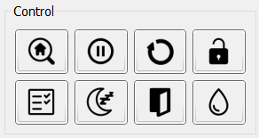

The Control panel contains a set of buttons that send basic GRBL commands. Table lists the button, the command it sends (command code), and its description in the order they appear on the panel – left to right, top to bottom.
Control Panel Buttons
| Button | Command | Description |
|---|---|---|
| Home | $H |
Search for the home position. |
| Hold | ! or ~ |
Stop current motion (!) or resume movement (~). |
| Reset | 0x18 |
Software reset of the controller. |
| Unlock | $X |
Force unlock from alarm state. |
| Check | $C or 0x18 |
Enable ($C) / disable (0x18) CP check mode. |
| Sleep | $SLP |
Put the controller into low‑power mode. |
| Door | 0x84 |
Force the controller into door‑triggered mode. |
| Flood | 0xA0 |
Toggle water cooling system on/off. |
Note: When disabling CP check mode, a software reset command is sent followed by restoration of the controller state and work‑coordinate offsets.